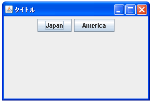

- Home ›
- Swing ›
- FlowLayoutクラス
コンポーネントの配置方法について
レイアウトマネージャーにFlowLayoutを使用している場合、コンポーネントを順に配置していった場合にどのように配置されるかをもう少し詳しく見ていきます。
今回はパネルにFlowLayoutを設定しパネルにコンポーネントを追加していく場合で考えてみます。パネル自体はフレームの中央に配置してあります。フレームはBorderLayoutがデフォルトのレイアウトマネージャーとなっておりCENTERに配置した場合は空いている領域いっぱいに拡大されますのでパネルはフレーム全体の大きさになっている状態です。(詳しくは『BorderLayoutクラス』を参照して下さい)。
それではまずパネルにコンポーネントを1つ配置してみます。
まずは画面上部の中央に配置されます。配置されたコンポーネント全体を左寄せや右寄せにする設定も可能ですがデフォルトでは中央寄せとなります。
ではさらにコンポーネントを配置してみます。

最初に追加されたコンポーネントの右側に配置されました。このように追加された順に右へ右へと配置されていきます。
ではさらにコンポーネントを配置してみます。
3つ目のコンポーネントは2つ目のコンポーネントの右側に配置できたのですが4つ目のコンポーネントを右側に配置しようとするとパネルの横幅を超えてしまいます。このような時は右側ではなく1つ下に移動して改めて配置が行われます。そして5番目のコンポーネントはまた右へ配置できれば配置されます。
このように左から右へ配置していき、配置できなくなったら下へ移るというのがFlowLayoutの基本動作となります。
また一度配置されたコンポーネントもその配置されているパネルやフレームのサイズが変更になると改めて配置がやりなおされます。先ほどのサンプルでフレームの幅を小さくしてみて下さい。
貼り付けているフレームやパネルの横幅が小さくなれば、同じ縦位置に配置できるコンポーネントの数が変わってくるので今まで同じ縦位置に配置されていたコンポーネントも下へ下へと移動して配置されるようになります。
逆に貼り付けているパネルなどの横幅が大きくなれば全てのコンポーネントが同じ縦位置に配置されます。
( Written by Tatsuo Ikura )

著者 / TATSUO IKURA
初心者～中級者の方を対象としたプログラミング方法や開発環境の構築の解説を行うサイトの運営を行っています。